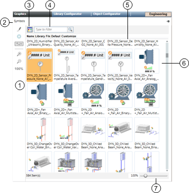
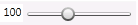

System Browser Library Browser

Library Browser View (Thumbnail View) | ||
| Name | Description |
1 | Library Browser Toolbar Menu
| Allows you to do the following with the selected Symbol. Allows you to edit the Symbol in the Graphics Editor.
Allows you to delete the selected Symbol.
Allows you to create a customized version of the selected Symbol.
Allows you to zoom-in on the Symbol.
Allows you to zoom-out of the Symbol.
|
2 | Folder Name | Displays the name of the folder whose Symbols are currently displayed in the Library Browser window. When you hover over the folder name with your mouse, a tooltip displays the full path of the folder. |
3 | Thumbnail\List View Toggle | Allows you to toggle between a thumbnail or list view of the graphic objects in the Library Browser pane. |
4 | Search Filter | Allows you to search the Symbol and Graphic Templates libraries and limit the objects displayed. |
5 | Library Browser pane. | Displays available Symbols and graphic templates depending on category or search criteria. |
6 | Graphic Icons | Thumbnails of available Symbols or graphic templates, depending on which mode you have selected. The selected Symbol or Graphic Template is highlighted. |
7 |  | Allows you to move the slider with your mouse to increase and decrease the magnification of the selected Symbol icon for viewing within the Symbol Browser view. The magnification value displays as you move the slider and has a minimum magnification of 30% and a maximum of 300%. The slider displays only when you have toggled to the thumbnail view. |